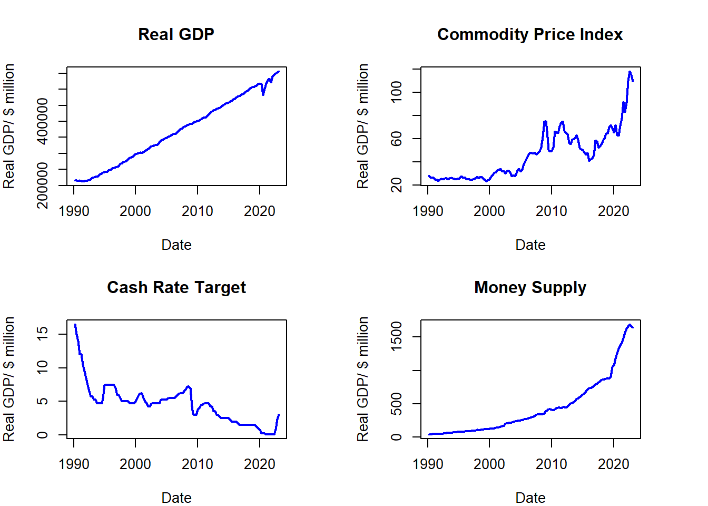

Examing the Effects of Monetary Policy on Regional Unemployment in Australia: A Structural Vector Autoregression Analysis
Abstract. Using data from the Australian Bureau of Statistics, this paper attempts to understand how changes in monetary policy impact unemployment levels in different Australian states using a Structural Vector Autoregression (SVAR) approach.
Keywords. Monetary policy, Unemployement, Regional Effects, Impluse Response Function, Structural Vector Autoregressions, Australia # Introduction
Intro in progress
Plots below
Data
The data required can all be taken directly from the Australian Bureau of Statistics who provide data from 1959 to 2022 on GDP, government spending, government revenue, and debt data from 1988. They also provide data relating to the Gini coefficient, however I am unable to find the series ID for this at present.
Below are plots of each of the available variables over time.


Preliminary Results
ACF and PACF plots
ACF plots-1.png)
ACF plots-2.png)
ACF plots-3.png)
ACF plots-4.png)
##Integration order verification
Variable Lag.Order ADF.Statistic p.value
1 Log(Real GDP) 4 -0.7525317 0.9635359
2 First Diff: Consumer Price Index 4 -1.7942981 0.6620412
3 Cash Rate Target 4 -4.8673605 0.0100000
4 Money Supply 4 -1.0831417 0.9218481
5 Unemployment Rate: Queensland 4 -1.8629808 0.6334799
6 Unemployment Rate: New South Wales 4 -2.8242561 0.2337397
7 Unemployment Rate: Victoria 4 -2.1288883 0.5229040
8 Unemployment Rate: Western Australia 4 -2.0415440 0.5592256 Variable Lag.Order ADF.Statistic
1 Log(Real GDP) 3 -7.56973803890392
2 First Diff: Consumer Price Index 3 -9.80351441670259
3 Cash Rate Target N/A N/A
4 Money Supply 3 -3.3534305304591
5 Unemployment Rate: Queensland 3 -6.54720362988815
6 Unemployment Rate: New South Wales 3 -5.26681334164472
7 Unemployment Rate: Victoria 3 -6.57502342373225
8 Unemployment Rate: Western Australia 3 -6.95240168751401
p.value
1 0.01
2 0.01
3 N/A
4 0.065428244923483
5 0.01
6 0.01
7 0.01
8 0.01 Variable Lag.Order ADF.Statistic p.value
1 Log(Real GDP) N/A N/A N/A
2 First Diff: Consumer Price Index N/A N/A N/A
3 Cash Rate Target N/A N/A N/A
4 Money Supply 3 -5.8300171259421 0.01
5 Unemployment Rate: Queensland N/A N/A N/A
6 Unemployment Rate: New South Wales N/A N/A N/A
7 Unemployment Rate: Victoria N/A N/A N/A
8 Unemployment Rate: Western Australia N/A N/A N/AMethodology
Below is the Structural Vector Autoregression (SVAR) modelrequired to capture the dynamics between the variables.
\[\begin{align} B_0 Y_t = b_0 + B_1 y_{t-1} +\dots +B_p y_{t-p} + u_t \end{align}\] \[\begin{align} u_t|Y_{t-1}~iid(0_N,I_N) \end{align}\]
Where:
\(Y_{t}\) is an \(N\times 1\) vector of endogenous variables, including the Gini coefficient, government spending, revenue, GDP, and debt.
\(B_0\) is an \(N \times N\) structural matrix capturing comtemporaneous relationships between variables.
\(u_t\) is an \(N\times 1\) vector of independent structural shocks, conditional on \(Y_{t-1}\).
Using this model I will give me an insight into dynamic relationships between government spending, revenue and income inequality. Impulse response functions and forecast error variance decompositions (FEVDs) will be used to analyse the effects of fiscal policy on income inequality.
Using both of these techniques together, I will gain an understanding of the long- and short-run impacts of shocks to government spending and taxation.
Estimation Framework
Starting with the reduced form, we can present the likelihood function as a normal-inverse Wishart distribution for \((A,\Sigma)\)
\[\begin{gather} Y = XA + E \\ \\ E|X \sim MN_{T \times N}(0_{T \times N},\Sigma,I_T) \end{gather}\]
\[\begin{gather} L(A,\Sigma|Y,X) \propto det(\Sigma)^{-\frac{T}{2}} exp \left\{-\frac{1}{2} tr \left[ \Sigma^{-1}(Y-XA)'(Y-XA) \right] \right\} \\ \\ = det(\Sigma)^{-\frac{T}{2}} exp \left\{-\frac{1}{2} tr \left[ \Sigma^{-1}(A-\hat{A})'X'X(A-\hat{A}) \right] \right\} exp \left\{-\frac{1}{2} tr \left[\Sigma^{-1}(Y-X \hat{A})'(Y-X \hat{A}) \right] \right\} \\ \end{gather}\]
where: \[\begin{gather} \hat{A} = (X'X)^{-1}X'Y \end{gather}\]
Hence:
\[\begin{gather} L(A,\Sigma|Y,X) = NIW_{K\times N}(\hat{A}, (X'X)^{-1},(Y-X\hat{A})'(Y-X\hat{A}), T-N-K) \end{gather}\]
This leads to joint prior distribution for \((A, \Sigma)\) of the same form:
\[\begin{gather} p(A,\Sigma) = p(A|\Sigma) p(\Sigma) \\ A|\Sigma \sim MN_{K \times N} (\underline{A}, \Sigma , \underline{V}) \\ \Sigma \sim IW_{N}(\underline{S},\underline{\nu}) \end{gather}\]
The full conditional posterior is, therefore, given by:
\[\begin{gather} p(A,\Sigma |Y, X) = p(A|Y, X, \Sigma) p(\Sigma|Y,X) \\ p(A|Y,X,\Sigma) = MN_{K \times N} (\bar{A}, \Sigma , \bar{V}) \\ p(\Sigma|Y, X) = IW_{N}(\bar{S},\bar{\nu}) \end{gather}\]
with parameters:
\[\begin{gather} \bar{V} = (X^{'}X+ \underline{V}^{-1})^{-1} \\ \\ \bar{A} = \bar{V}(X^{'}Y+\underline{V}^{-1} \underline{A}) \\ \\ \bar{\nu} = T + \underline{\nu} \\ \\ \bar{S} = \underline{S} + Y^{'}Y + \underline{A}^{'}\underline{V}^{-1}\underline{A} - \bar{A}^{'}\bar{V}^{-1}\bar{A} \end{gather}\]
The following function uses the Minnesota prior to set priors for \(V\), \(A\), \(\nu,\) and \(S\)
calc.priors <- function(p, X, Y){
A.hat = solve(t(X)%*%X)%*%(t(X)%*%Y)
Sigma.hat = t(Y-X%*%A.hat)%*%(Y-X%*%A.hat)/T
N = ncol(Y)
#Setting Kappas
kappa.1 <- 0.02^2
kappa.2 <-100
K = 1 + (p*N)
A.prior = matrix(0,nrow(A.hat),ncol(A.hat))
A.prior[2:(N+1),] = diag(N)
V.prior = diag(c(kappa.2,kappa.1*((1:p)^(-2))%x%rep(1,N)))
S.prior = diag(diag(Sigma.hat))
nu.prior = N+1
priors <- list(A.prior = A.prior , V.prior=V.prior, S.prior=S.prior, nu.prior=nu.prior)
return(priors)
}Using these priors and the function below, we can calculate posteriors \(A\), \(B\), and \(\Sigma\)
calc.posteriors <- function (S, X, Y, priors){
N = ncol(Y)
A.prior <- priors$A.prior
V.prior <- priors$V.prior
S.prior <- priors$S.prior
nu.prior <- priors$nu.prior
V.bar.inv = (t(X)%*%X) + diag(1/diag(V.prior))
V.bar = solve(V.bar.inv)
A.bar = V.bar%*%(t(X)%*%Y + diag(1/diag(V.prior))%*%A.prior)
nu.bar = nrow(Y) + nu.prior
S.bar = S.prior + t(Y)%*%Y + t(A.prior)%*%diag(1/diag(V.prior))%*%A.prior - t(A.bar)%*%V.bar.inv%*%A.bar
S.bar.inv = solve(S.bar)
Sigma.posterior.inv = rWishart(S, df=nu.bar, Sigma=S.bar.inv)
Sigma.posterior = apply(Sigma.posterior.inv,3,solve)
Sigma.posterior = array(Sigma.posterior,c(N,N,S))
A.posterior = array(rnorm(prod(c(dim(A.bar),S))),c(dim(A.bar),S))
L = t(chol(V.bar))
B.posterior = array(NA, c(N,N,S))
for (s in 1:S){
chol.sigma = chol(Sigma.posterior[,,s])
A.posterior[,,s]= A.bar + L%*%A.posterior[,,s]%*%chol.sigma
B.posterior[,,s]= t(chol.sigma)
}
posterior = list(A.posterior = A.posterior, B.posterior = B.posterior, Sigma.posterior = Sigma.posterior)
return(posterior)
}Extended model formulation
p = 2
prior.ex <- function(Y, X, p){
in.obvs.Y <- Y[1:p,]
N = ncol(Y)
M = (N*p)+1
gamma.3 = 1
Y.D <- matrix(nrow = N, ncol = N)
X.D <- matrix(nrow = N, ncol = M)
for (i in 1:N){
if(p == 1){
dum.i = in.obvs.Y[i]
}
else{dum.i = mean(in.obvs.Y[,i])}
for (j in 1:N){
if(i == j){
Y.D[j,i] = (dum.i/gamma.3)}
else{Y.D[j,i] = 0}
}
}
for(i in 1:N){
for(s in 1:M){
if(p == 1){
dum.i = in.obvs.Y[i]
}
else{dum.i = mean(in.obvs.Y[,i])}
if(s == i & s < M){
X.D[i, s] = dum.i
}
else{X.D[i,s] = 0}
}}
gamma.4 = 1
Y.temp = matrix(ncol = N, nrow = 1)
X.temp = matrix(ncol = M, nrow = 1)
for (i in 1:N){
if(p == 1){
dum.i = mean(in.obvs.Y[i])
}
else{dum.i = mean(in.obvs.Y[,i])}
Y.temp[i] = dum.i/gamma.4}
for (s in 1:M){
if(s<=N){
if(p == 1){
dum.s = mean(in.obvs.Y[s])}
else{
dum.s = mean(in.obvs.Y[,s])}
if(s < M){
X.temp[s] = dum.s/gamma.4}
}
else{X.temp[s] = 1/gamma.4}}
Y.ex = rbind(Y.D, Y.temp)
X.ex = rbind(X.D, X.temp)
XN <- rbind(X.ex, X)
YN <- rbind(Y.ex, Y)
ext.data <- list(YN = YN, XN = XN)
return(ext.data)
}Reproduction for artificial data
The above functions are tested using data containing 1000 observations simulated from a bi-variate Gaussian random walk process with the covariance matrix equal to the identity matrix of order 2.
#Basic Model Test
y = apply(matrix(rnorm(2000), ncol = 2), 2, cumsum)
Y = y[2:1000,]
X = cbind(1, y[1:999,])
priors = calc.priors(p = 1, X = X, Y = Y)
posteriors = calc.posteriors(S = 1000, X = X, Y= Y, priors)A.posterior:
[,1] [,2]
[1,] -0.029510706 -0.067434196
[2,] 0.989916965 0.003796651
[3,] 0.004337195 0.997244090B.posterior:
[,1] [,2]
[1,] 1.39758385 0.000000
[2,] -0.01825201 1.399495Sigma.posterior:
[,1] [,2]
[1,] 1.95426915 -0.02561268
[2,] -0.02561268 1.96184209##Extended model Test
inital.dum = prior.ex(X = X, Y = Y, p = 1)
XN <- inital.dum$XN
YN <- inital.dum$YN
priors.ext = calc.priors(p = 1, X = XN, Y = YN)
posteriors.ext = calc.posteriors(S = 1000, X = XN,Y=YN, priors = priors.ext)A.posterior:
[,1] [,2]
[1,] -0.015731219 -0.071308008
[2,] 0.990008158 0.003858788
[3,] 0.004788251 0.997169727B.posterior:
[,1] [,2]
[1,] 1.40726059 0.000000
[2,] -0.02291426 1.402443Sigma.posterior:
[,1] [,2]
[1,] 1.98141136 -0.03227272
[2,] -0.03227272 1.97045185Empirical Estimation
A.posterior:
[,1] [,2] [,3] [,4] [,5]
[1,] 8.170854e-03 -0.0291732421 -4.926734e-02 0.7837323776 1.013233e-02
[2,] 9.999928e-01 -0.0004911619 1.292092e-04 -0.0003379437 4.821274e-05
[3,] -5.206772e-05 0.9888201640 2.627472e-03 -0.0883698011 1.865168e-03
[4,] -1.145055e-04 -0.0009035585 9.870040e-01 -0.1374168741 5.956635e-03
[5,] -3.950919e-05 0.0005239745 -2.896909e-03 1.2929050092 -5.752048e-04
[6,] 6.053482e-05 0.0014309610 -5.615245e-03 0.1389720400 9.940540e-01
[7,] 1.859210e-07 0.0001986316 2.220043e-06 -0.0062674797 2.997227e-04
[8,] -5.621073e-06 -0.0002326990 -8.733154e-05 -0.0301111410 3.864709e-04
[9,] -3.150067e-05 -0.0008913248 -4.858898e-03 -0.0251244867 2.189114e-03
[10,] 3.904063e-05 -0.0004217661 3.182995e-03 -0.2747615134 5.027206e-04
[11,] 2.469140e-05 0.0003137860 -1.025420e-03 0.0344652774 -1.425339e-03B.posterior:
[,1] [,2] [,3] [,4] [,5]
[1,] 0.01000909 0.00000000 0.0000000 0.000000000 0.0000000
[2,] 0.26161603 0.61957455 0.0000000 0.000000000 0.0000000
[3,] 0.05371985 -0.01045848 0.4919773 0.000000000 0.0000000
[4,] -2.23580305 0.05560126 -4.4203868 17.147509517 0.0000000
[5,] -0.23805676 -0.02489021 -0.0667004 0.008043747 0.4061045Sigma.posterior:
[,1] [,2] [,3] [,4] [,5]
[1,] 0.0001005760 0.002627059 0.0005393488 -0.02248994 -0.002391643
[2,] 0.0026270591 0.457077623 0.0075661344 -0.54971327 -0.078082695
[3,] 0.0005393488 0.007566134 0.2498147153 -2.33897011 -0.046074190
[4,] -0.0224899363 -0.549713270 -2.3389701076 326.68862429 0.972134512
[5,] -0.0023916433 -0.078082695 -0.0460741902 0.97213451 0.232657938